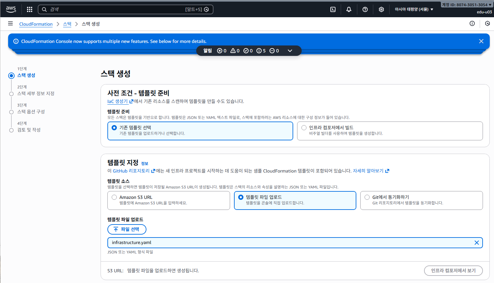
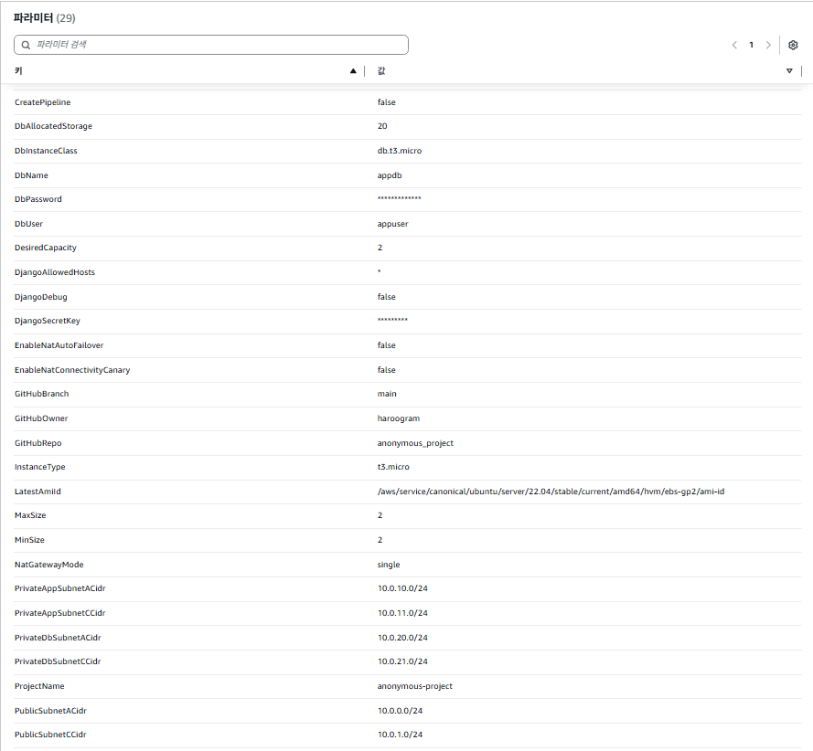
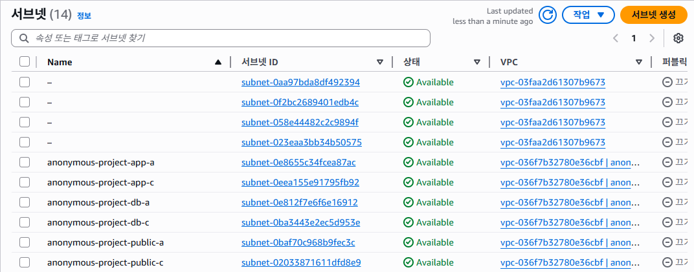
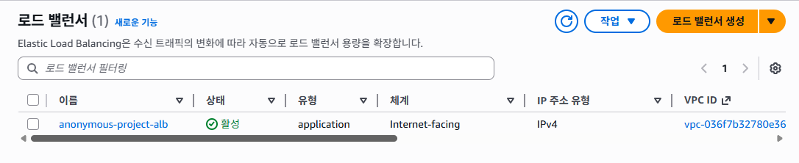
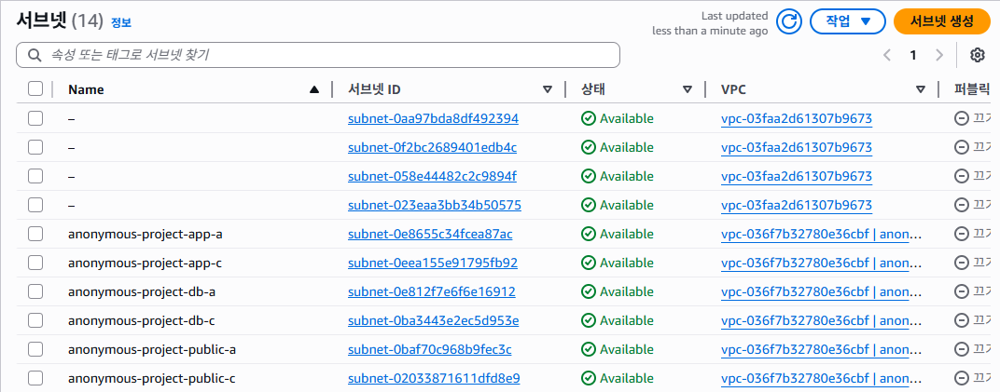
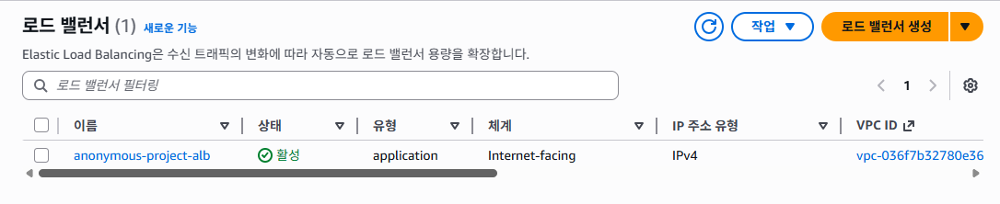
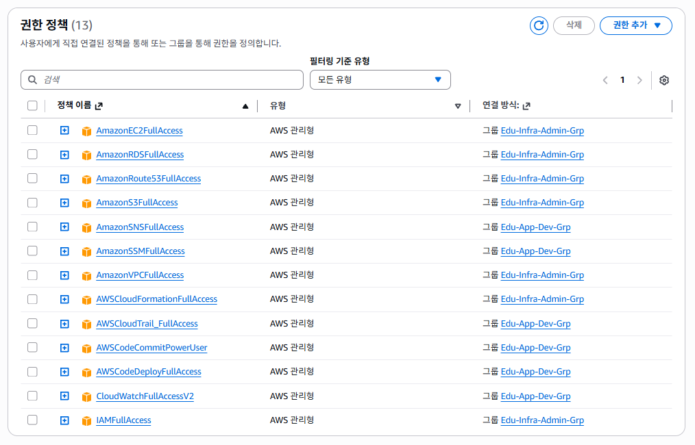

1) CloudFormation을 사용한 배경
- 다수의 AWS 리소스를 동시에 구성해야 했다.
- 콘솔 수작업보다 코드 기반 관리가 효율적이라 판단했다.
- 팀 프로젝트 특성상 동일한 환경의 반복 구축이 필요했다.
2) CloudFormation 한 줄 정의
- AWS 인프라를 YAML 코드로 정의하는 서비스
- 여러 리소스를 하나의 Stack으로 관리
인프라를 코드로 관리하여 동일한 환경을 언제든 재현할 수 있다.
3) CloudFormation을 선택한 이유
① 반복 구축 가능
- 스택 삭제 후 동일 환경 재생성 가능
② 설정 일관성
- 모든 설정이 YAML로 명시됨
③ 팀 협업에 적합
- 파일 공유만으로 환경 공유 가능
4) 교육 프로젝트 관점에서의 가치
- Infrastructure as Code 실습 경험
- 수정 → 재배포 과정을 통한 이해도 향상
5) 담당 역할
- CloudFormation YAML 작성
- 스택 생성/삭제 반복 검증
- 오류 발생 시 템플릿 수정
6) CloudFormation 스택 생성
① YAML 템플릿 업로드
② 파라미터 설정 및 스택 생성
③ 생성 후 주요 리소스 확인
 



- 리소스가 정의된 순서대로 자동 생성됨
- 네트워크 및 컴퓨트 리소스 정상 생성 확인
7) 스택 생성 중 오류 (CREATE_FAILED)
스택 생성 단계에서 하나의 오류라도 발생하면 전체 스택 생성이 실패한다.
- 스택 생성 단계에서 SecureString 미지원 → String으로 수정
- S3, RDS 등의 리소스 생성 권한 부족
- 파라미터 네이밍 규칙("_" 언더바 사용 금지) 오류
- 스택 생성 및 삭제에 필요한 권한 목록 
8) 스택 삭제 중 오류 (DELETE_FAILED)
S3, RDS와 같은 리소스는 생성 권한과 별도로 삭제 권한이 필요하며, 해당 권한이 없는 경우 스택 삭제가 중단되었다.
CloudFormation은 생성뿐 아니라 삭제 과정까지 리소스 관리 범위를 이해해야 안정적으로 사용할 수 있다.
9) 마무리
CloudFormation을 이용한 인프라 구축은 코드 기반으로 환경을 관리할 수 있다는 점에서 매우 편리하다.
그러나 코드에 단 하나의 오류가 있거나, 파라미터로 전달되는 리소스에 대한 권한이 부족할 경우 스택 생성 및 삭제가 실패할 수 있다. 또한 스택 생성이 완료되었더라도, 헬스체크 실패(Unhealthy)나 Auto Scaling Group 설정 오류로 인해 인스턴스가 정상적으로 동작하지 않는 문제도 발생하였다.
실습 과정에서 스택 생성에는 평균 약 15분, 삭제에는 20~25분 정도가 소요되었으며, 작은 설정 오류 하나가 전체 작업 시간을 크게 증가시킨다는 점을 직접 경험할 수 있었다.
CloudFormation은 편리한 도구이지만, 안정적인 사용을 위해서는 사전 설계와 권한, 설정에 대한 충분한 이해가 필요하다.